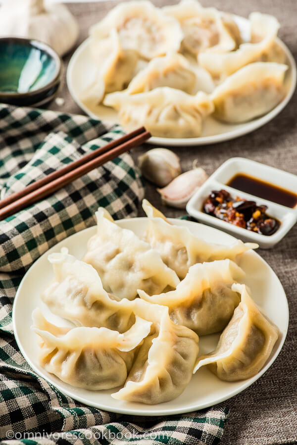
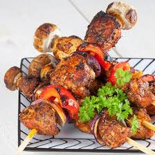

1 Roasted lamb
The dish is prepared with selected ingredients and is cooked using a special cooking technique. When preparing, a mixture of flour and water with yolk, salt, ginger, and pepper powder is applied to shroud the entire carcass. The lamb is then put into a specially made oven and baked for around one hour. It is trimmed with red silk around its neck and served with its mouth stuffed with fresh caraway. When eating, people use a knife to cut the mutton from the lamb.

2 Hands pilaf
The rice is infused with tons of flavor from the lamb, cumin, and chili peppers, creating a sensational feast. The onion and carrot have a tender, buttery texture. They all come together beautifully with the tender lamb, harmonizing into an addictive flavor that you just cannot stop eating.

3 Mongolian Boiled Lamb
This is the most traditional, simplest, and ubiquitous dish of the mongolian nomads. The meat of an animal (usually mutton) is cut into handy chunks together with the bones, and boiled in salted water until ready. Originally, this was the full meal, today some vegetables or a condiment like Ketchup are usually added.

4 mutton kebab
Made with 4 to 5 pieces of lamb, the skewers are only about 5 inches long, and the meat is no bigger than the thickness of your thumb. Vendors marinate the meat with salt, both whole and ground cumin, white pepper, chili powder, and Sichuan peppercorns. To make the cheap lamb kabobs extra juicy, they place small chunks of fat between each piece of meat. The fat mostly melts away on the grill, leaving caramelized crispy bits that burst in your mouth with savory juice.

5 Roasted Duck
Beijing cuisine enjoys international fame for the variety of dishes developed in the imperial kitchens. None is more universally renowned than Beijing Duck. Esteemed by gourmets for its mouth-watering aroma, tempting appearance and delicate taste, there are secrets in the cooking, skill in the preparation and serving and delight in the tasting. The crispy skin and the juicy meat leave a deep impression on first-time consumers during their Beijing trip.

6 Veal goulash cakes
Crunchy and tantalising to the taste buds on the first bite, then juicy, moist and incredibly tasty veal complete this amazing beef cake. The juice oozes out with the bite, and the heat from the pan is still retained in the meat all the way through.
7 dumplings
Dumplings in China are most commonly steamed, boiled, or fried, can be either sweet or savory, and are often paired with certain festivals.

8 Dapan Chicken and fried Nang
Fried chicken,onion, a few herbs - nothing more, nothing less. A popular lunch dish served typically with a wedge of lime and slices of cucumber.

9 mutton hot pot
traditionally it would have been made with cuts of mutton such as neck chops. Kidneys and even some black pudding can be added. Back in the days when they were cheap, a few oysters would be slipped under the potato just for the last part of cooking.
shashliks